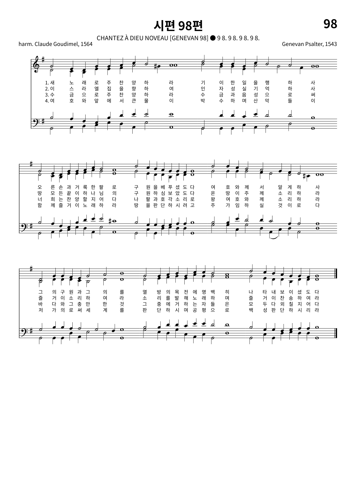

Psalm 98
CHANTEZ À DIEU NOVEAU [GENEVAN 98] · 9 8. 9 8. 9 8. 9 8.
English title: Sing to the LORD, a New Song Voicing
Tune: Genevan Psalter, 1543 · Harmony: Claude Goudimel, 1564 · Lyrics: Korean adaptation of Psalm 98 from the Korean Revised Version (AI draft adaptation · not yet theologically reviewed) · 4 stanzas
Score PDF MusicXML (for printing) MusicXML (for accompaniment, with prelude and repeats) Read Psalm 98 (Korean Revised Version)
Score
← Psalm 97 ListAccompaniment (in preparation)Psalm 99 →
Lyrics (Korean)
Stanza 1
새 노래로 주 찬양하라
기이한 일을 행하사
오른손과 거룩한 팔로
구원을 베푸셨도다
여호와께서 알게 하사
그의 구원과 그 의를
열방의 목전에 명백히
나타내 보이셨도다
새 노래로 주 찬양하라
기이한 일을 행하사
오른손과 거룩한 팔로
구원을 베푸셨도다
여호와께서 알게 하사
그의 구원과 그 의를
열방의 목전에 명백히
나타내 보이셨도다
Stanza 2
이스라엘 집을 향하여
인자 성실 기억하사
땅 모든 끝이 하나님의
구원하심 보았도다
온 땅이 주께 소리하라
즐거이 소리하여라
소리를 발해 노래하며
즐거이 찬송하여라
이스라엘 집을 향하여
인자 성실 기억하사
땅 모든 끝이 하나님의
구원하심 보았도다
온 땅이 주께 소리하라
즐거이 소리하여라
소리를 발해 노래하며
즐거이 찬송하여라
Stanza 3
수금으로 주 찬양하라
수금과 음성으로써
너희는 찬양할지어다
나팔과 호각 소리로
왕 여호와께 소리하라
바다와 그 충만한 것
그 중에 거하는 자들은
모두 다 외칠지어다
수금으로 주 찬양하라
수금과 음성으로써
너희는 찬양할지어다
나팔과 호각 소리로
왕 여호와께 소리하라
바다와 그 충만한 것
그 중에 거하는 자들은
모두 다 외칠지어다
Stanza 4
여호와 앞에서 큰 물이
박수하며 산악들이
함께 즐거이 노래하라
땅을 판단하시려고
주가 임하실 것이로다
저가 의로써 세계를
판단하시며 공평으로
백성 판단하시리라
여호와 앞에서 큰 물이
박수하며 산악들이
함께 즐거이 노래하라
땅을 판단하시려고
주가 임하실 것이로다
저가 의로써 세계를
판단하시며 공평으로
백성 판단하시리라